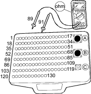
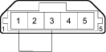

DTC P0113: IAT Sensor Circuit High Voltage
- Check the ''On Board Diagnostic (OBD) System Check''.
Was the ''OBD System Check'' performed?
YES – Go to step 2.
NO – Go to OBD System Check. 
- Check the DTC.
Are there other DTCs (P0101/P0103) being output?
YES – Go to step 3.
NO – Go to step 8.
- Turn the ignition switch OFF.
- Disconnect the IAT sensor 5P connector.
- Disconnect ECM connector.
- Check the IAT sensor signal and ground circuits for an open.
Wire side of female terminals
MAF/IAT sensor 5P connector

JUMPER WIRE

Is a problem found?
YES – Repair the IAT/MAF signal or ground circuit.
NO – Go to step 7.
- Connect the IAT/MAF sensor 5P connector and the ECM connector.
- Turn the ignition switch ON (II).
- Check the IAT with the scan tool.
Is about 215°C (419°F) indicated?
YES – Go to step 10.
NO – Intermittent failure, system is OK at this time. Check for poor connections or loose wires at the IAT sensor and at the ECM.
- Turn the ignition switch OFF.
- Disconnect the IAT sensor 5P connector.
- Connect the IAT sensor 5P connector terminals No. 1 and No. 3 with a jumper wire.
Wire side of female terminals
MAF/IAT sensor 5P connector

JUMPER WIRE
- Turn the ignition switch ON (II).
- Check the IAT with the scan tool.
Is there more than 120°C (248°F)?
YES – Replace the IAT/MAF sensor.
NO – Substitute a known-good ECM and recheck. If symptom/indication goes away, replace the original ECM.
| NOTICE |
The battery power supply short circuit to 5 V power supply damages the ECM.